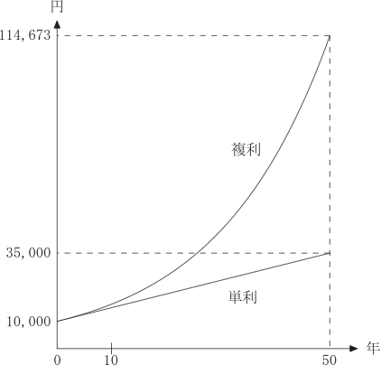

経済学で出る数学
ワークブックでじっくり攻める：応用問題
単利と複利の比（年数$n$の関数）
$FV_{s}(n)$を，$a$円を利率$r$で$n$年単利運用した場合の将来価値とし，
$FV_{c}(n)$を，$a$円を利率$r$で$n$年複利運用した場合の将来価値とする．
複利と単利の比，
\[
\dfrac{FV_{c}(n)}{FV_{s}(n)}
\]
は$n$について単調増加であることを示しなさい．
【解答】
\begin{align}
\dfrac{FV_{c}(n+1)}{FV_{s}(n+1)}-\dfrac{FV_{c}(n)}{FV_{s}(n)}&=
\dfrac{(1+r)^{n+1}}{1+(n+1)r}-\dfrac{(1+r)^{n}}{1+nr}\\
&=\dfrac{(1+r)^{n+1}(1+nr)-(1+r)^n(1+(n+1)r)}{(1+(n+1)r)(1+nr)}\\
&=(1+r)^n\dfrac{(1+r)(1+nr)-(1+(n+1)r)}{(1+(n+1)r)(1+nr)}\\
&=(1+r)^n\dfrac{(1+nr+r+nr^2)-(1+nr+r)}{(1+(n+1)r)(1+nr)}\\
&=(1+r)^n\dfrac{nr^2}{(1+(n+1)r)(1+nr)} > 0.
\end{align}
【解答終】
【メモ】
複利運用と単利運用のギャップは時間が経つ程，大きくなることを意味している．

【メモ終】
ふろく（２）応用問題 一覧へ